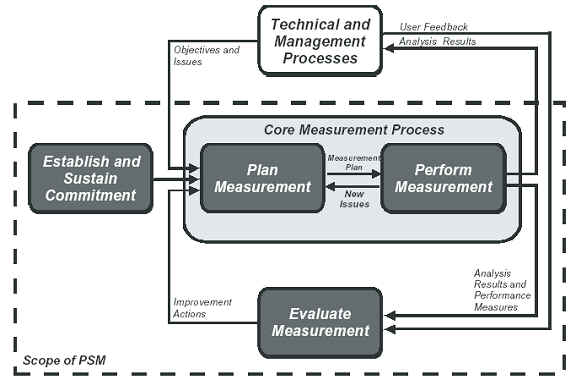

| Concept: Measurement Process Model (PSM) |
 |
|
| Related Elements |
|---|
IntroductionThe Measurement Information Model (PSM) provides a structure for relating information needs, measures, and information products. The Measurement Process Model works in conjunction with the Measurement Information Model, providing an application framework to implement measurement on a given project. Both models work together to define a measurement program appropriate for each particular, and unique, project. Measurement Process ModelThe following figure depicts the Measurement Process Model. The model is built around a typical "Plan - Do - Check - Act" management sequence, adapted to support measurement specific activities and tasks. The Measurement Process Model includes four primary activities, each of which is essential to successful measurement implementation. These activities include:
 The Plan Measurement activity encompasses the identification of project information needs and the selection of appropriate measures to address these needs using the Measurement Information Model. Plan Measurement also includes tasks related to the definition of data collection, analysis, and reporting procedures; tasks related to planning for evaluating the measurement results in the form of various information products; and tasks for assessing the measurement process itself. Most significantly, the Plan Measurement activity provides for the integration of the measures into existing project technical and management processes. Rather than force a project to implement a predefined measure, PSM, through this integration task, ensures that the selected measures will be effective within the context of the project. The Plan Measurement activity also addresses the resources and technologies required to implement a project measurement program. The output of the Plan Measurement activity is a well-defined measurement approach that directly supports the project's information needs. The Perform Measurement activity, along with Plan Measurement, is considered one of the core activities that directly addresses the requirements of the measurement user. Perform Measurement encompasses the collecting and processing of measurement data; using the data to analyze both individual information needs and how the information needs and associated issues interrelate; and the generation of information products to present the analysis results, alternative courses of action, and recommendations to the project decision makers. Perform Measurement implements the measurement plan and produces the information products necessary for effective measurement-based decision-making. The Evaluate Measurement activity applies measurement and analysis techniques to the measurement process itself. It encompasses the assessment of both the applied measures and the capability of the measurement process, and it helps to identify associated improvement actions. The Evaluate Measurement activity ensures that the project measurement approach is continually updated to address current information needs, and it promotes an increasing maturity of the project and organizational measurement process. The Establish and Sustain Commitment activity ensures that measurement is supported both at the project and organizational levels. It provides the resources and organizational infrastructure required to implement a viable measurement program. A fifth activity, Technical and Management Processes, is also depicted in the Measurement Process Model. Although technically not a measurement- specific activity, Technical and Management Processes interface directly with the measurement process. The project decision makers operate within these processes, defining information needs and using the measurement information products to make decisions. The Measurement Process Model is iterative by design. It is defined to be tailored to the characteristics and context of a particular project, and to be adaptable to changing project information and decision requirements. Both the Measurement Information Model and the Measurement Process Model establish a measurement approach that captures the experience and principles learned from previous software measurement applications. Together they provide the basis for an effective software measurement program. |
Copyright © 2001–2007 Practical Software & Systems Measurement (PSM). |